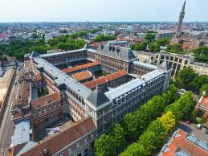

Arts et Métiers ParisTech is one of France's seven leading engineering schools (Grandes Écoles), founded in 1806. Admission is through a national competitive examination taken after two years of intensive preparatory studies — roughly equivalent to gaining admission to a top US engineering school based purely on exam performance.
The Diplôme d'ingénieur is a five-year Bologna-equivalent degree (3 years preparatory + 2 years engineering school), accredited at MSc level by the French national engineering accreditation body (CTI), the equivalent of ABET. Recognized by the French government as equivalent to a Master's degree.
The Lille campus specializes in mechanical engineering, materials science, and industrial optimization — a technical foundation that directly underpins every project in this portfolio.
